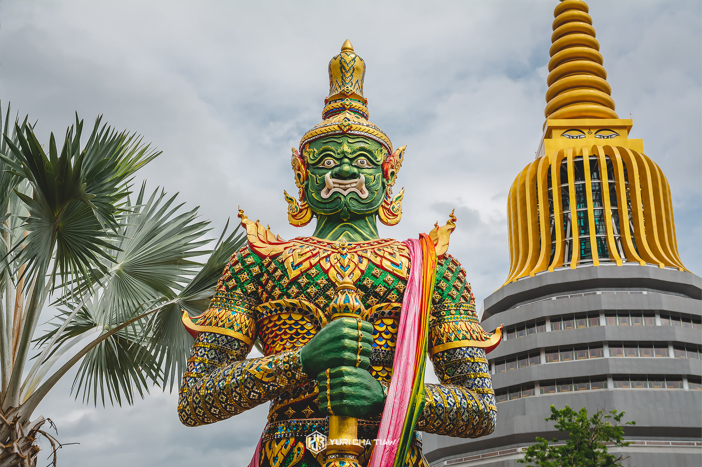
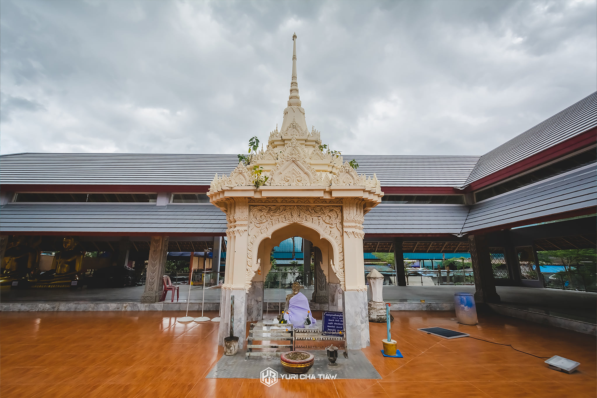

วัดเกตุมดีศรีวราราม
ที่เที่ยวสมุทรสาคร ที่เหล่านักท่องเที่ยวไม่ควรพลาดมาเที่ยวชม มากราบไหว้ขอพร ณ วัดเกตุมดีศรีวราราม ที่ตั้งอยู่ในเขตพื้นที่ตำบลบางโทรัด อำเภอเมืองสมุทรสาคร จังหวัดสมุทรสาคร ซึ่งวัดเกตุมดีศรีวรารามแห่งนี้นั้น ถูกสร้างขึ้นมาเมื่อปี พุทธศักราช 2506 ภายในวัดเป็นที่สถานที่ประดิษฐานพระบรมธาตุเกตุมวดีย์ และ พระอุโบสถทรงไทย ที่ชาวบ้านต่างให้ความเคารพนับถือ นอกจากนี้แล้วภายในยังมีรูปปั้นพระเกจิอาจารย์ต่างๆ ท้าวเวสสุวรรณ ที่เหล่านักท่องเที่ยวสามารถมากราบไหว้ขอพรเพื่อเสริมความเป็นสิริมงคลแก่ชีวิต